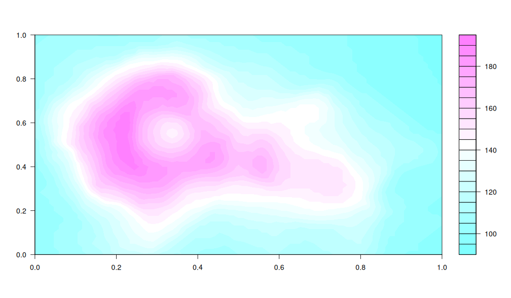

Get started
Add the extra CSS asset
@snap-clean:
output:
html:
meta:
css: ["@default", "@snap", "@snap-clean"]
js: ["@snap"]
Example slide
This is a subtitle
Before we dive a bit deeper, here is a simple example of the
litedown clean theme.
- No pictures or anything fancy. Just text for the moment.
Next, we’ll take a brief tour of some theme components.
- We’ll use the same basic structure as the original slides for the Quarto reveal.js “clean” theme.
- Not all of the original theme features are available for this litedown implementation, but the main aesthetic highlights are supported.
Components
Ordered and Unordered Lists
Here we have an unordered list.
- first item
- sub-item
- second item
And next we have an ordered one.
- first item
- sub-item
- second item
Components
Alerts & Cross-refs
To emphasize specific words or text, you can:
- Use the default
alertclass, e.g. important note. - Use the
fgclass for custom colour, e.g. important note. - Use the
bgclass for custom background, e.g. important note.
Components
Mathematics
Use inline (\(\alpha\), \(\pi\)) or display math as needed:
$$P(E) = {n \choose k} p^k (2-p)^{n-k} \int^\infty_0 x dx$$
$$\hat{\sigma} = \sqrt\frac{\sum(Y_i – \hat{Y}_i)^2} {n – 2}$$
Components
Multicolumn I: Text only
Column 1
Here is a long sentence that will wrap onto the next line as it hits the column width, and continue this way until it stops.
Column 2
Some other text in another column.
A second paragraph.
Multicolumn support is very flexible and we can continue with a single full span column in the same slide.
Components
Multicolumn II: Text and figures

- A point about the figure that is potentially important.
- Another point about the figure that is also potentially important.
Tables
Markdown
The clean theme rolls its own minimalist aesthetic for tables.
This should interface directly with “manual” markdown tables…
| Feature | Quarto | litedown |
|---|---|---|
| Speed | Slow | Fast |
| Size | Large | Small |
| Deps | Many | Few |
… or “computed” tables (next slide).
Regression tables
Regression example
library(fixest)
mods = feols(
rating ~ complaints +
learning + csw0(raises + critical),
data = attitude
)
dict = c("rating" = "Overall Rating",
"complaints" = "Handling of Complaints",
"learning" = "Opportunity to Learn",
"raises" = "Performance-Based Raises",
"critical" = "Too Critical")
Regression tables
modelsummary
library(modelsummary)
modelsummary(
setNames(mods, c("(1)", "(2)")),
coef_map = dict, stars = TRUE,
gof_map = NA
) |>
# some optional stylistic tweaks
tinytable::group_tt(j = list("Dep. variable: Overall Rating" = 2:3)) |>
tinytable::style_tt(i = 1:2, j = 2:3, background = "pink")
Plots
Volcano plot

Summary
A minimalist and elegant presentation theme
The litedown clean theme aims to be a minimalist and elegant presentation theme, ported from the original Quarto reveal.js version.
- Same visual identity: colours, typography, and table styling.
- Column layouts via
columnsclasses. - Lightweight: no Quarto, Pandoc, or knitr dependencies.
- See the litedown repo for more.
Render with litedown::fuse().